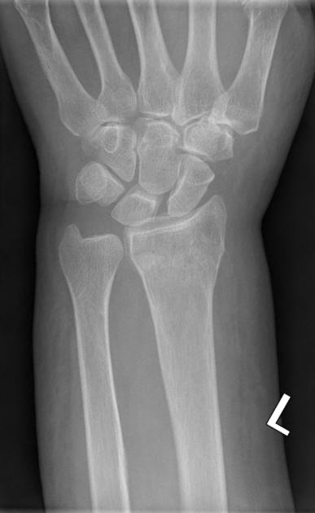
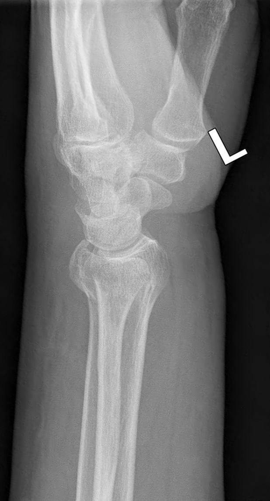
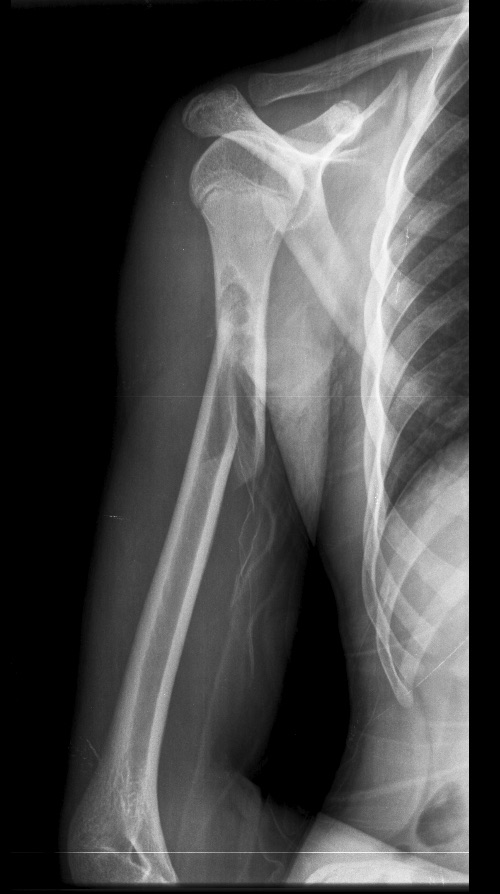
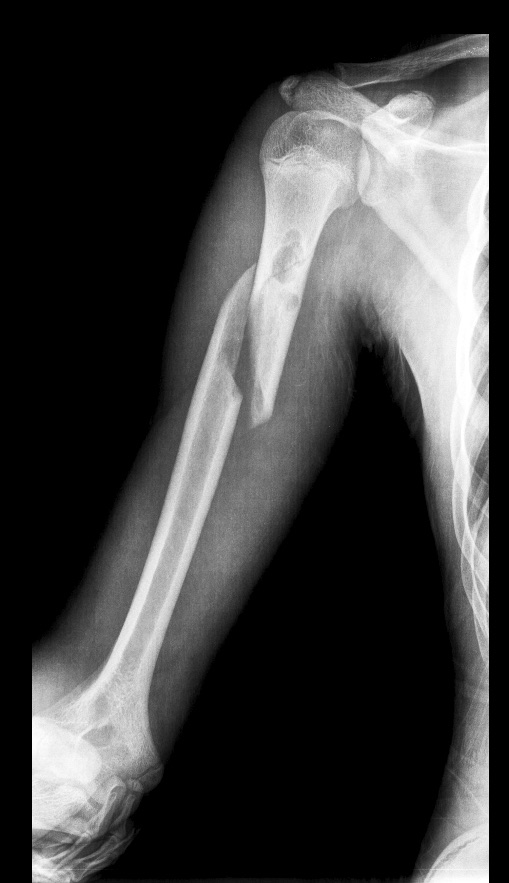
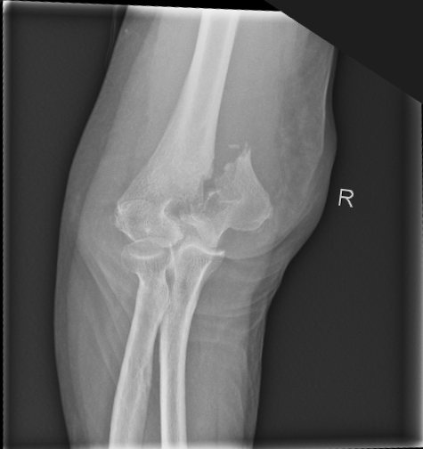
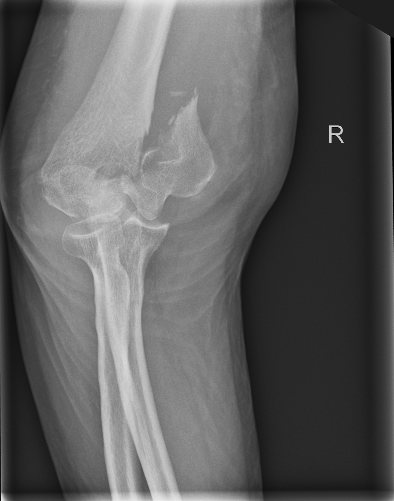
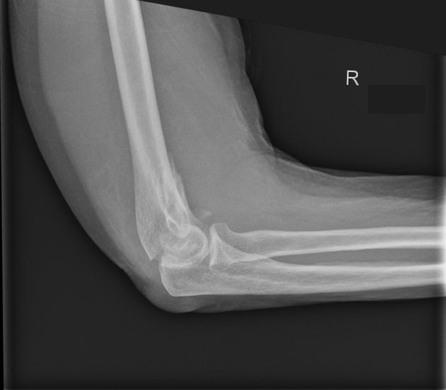
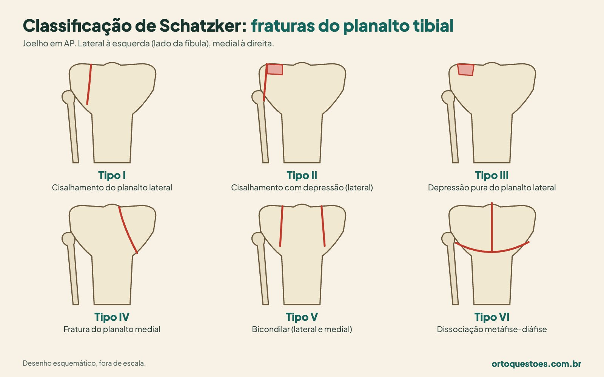

Como usar esta galeria
Ler imagem é estudo ativo na forma mais pura: você olha, levanta uma hipótese e confere. Em cada caso abaixo, faça três perguntas antes de abrir a explicação: qual incidência é esta, onde está a lesão e o que eu pediria ou faria em seguida. É o mesmo raciocínio que as questões com imagem do TEOT e do TARO cobram.

Punho: radiografia do rádio distal em AP e perfil




O que medir antes de classificar?
No rádio distal, a leitura começa pelos parâmetros, não pelo nome da classificação. No AP: a inclinação radial (em torno de 22 graus), a altura radial (cerca de 11 mm) e a variância ulnar. No perfil: a inclinação volar (cerca de 11 graus) e a congruência da articulação radiocárpica e da radioulnar distal. Perder inclinação volar e encurtar o rádio são os desvios que mais mudam a conduta. Depois vem a pergunta da banca: é extra-articular, parcialmente articular ou articular completa (como na classificação AO)?
Úmero proximal: fratura através de uma lesão lítica




Por que este traço chama atenção?
Quando uma fratura passa por uma área de osso rarefeito, com cortical afilada, depois de um trauma pequeno, pense em fratura patológica. No úmero proximal de crianças e adolescentes, a causa clássica é o cisto ósseo simples (unicameral), metafisário e central; o sinal do "fragmento caído" (fallen fragment) reforça essa hipótese. No adulto, a lista muda: metástase e mieloma entram primeiro. A pergunta que a banca adora é justamente essa: a lesão de base muda o tratamento.
Úmero distal: fratura intra-articular do cotovelo






Como a banca pergunta esta fratura?
No adulto, a fratura do úmero distal que entra na articulação, separando as duas colunas, é a do tipo C da classificação AO/OTA (articular completa). O tratamento padrão no adulto ativo é a redução aberta e fixação com duas placas, em geral pela via posterior, com osteotomia do olécrano ou preservando o aparelho extensor; no idoso com osso muito cominuído, a artroplastia total do cotovelo entra como opção. O nervo que sempre aparece nas alternativas é o ulnar, que precisa ser identificado e protegido nessa via. Não confunda com a fratura do terço distal da diáfise (HOLSTEIN-LEWIS), que é extra-articular e ameaça o nervo radial.
Classificação de Schatzker do planalto tibial


A regra de memória: I a III são do planalto lateral, em ordem de cisalhamento puro, cisalhamento com depressão e depressão pura; o IV é o medial (energia maior, mais lesão associada, inclusive vascular e do nervo fibular); o V é bicondilar e o VI separa a metáfise da diáfise. Os tipos IV a VI pedem atenção para síndrome compartimental.
Teste: um idoso com osteoporose cai e afunda só o centro do planalto lateral, sem traço de cisalhamento. Qual o tipo?
Schatzker III, a depressão pura do planalto lateral. É típica do osso osteoporótico, que afunda em vez de se partir. Com um traço de cisalhamento junto, seria o tipo II, o mais comum no adulto.
Da imagem para a anatomia e para as questões

Viu a fratura? Abra o osso no Atlas 3D para ver as estruturas ao redor, e responda as questões do tema com o comentário de cada alternativa. Para entender o método por trás, leia Curso de ortopedia R1: como estudar do primeiro ano ao TEOT e o guia de estudo ativo.
Imagens de uso do Orto Questões. Radiografias sem identificação do paciente.
Leu a imagem? Agora responda.
As questões oficiais do TEOT e do TARO com imagem, comentadas como uma aula. Crie a conta grátis e treine hoje.